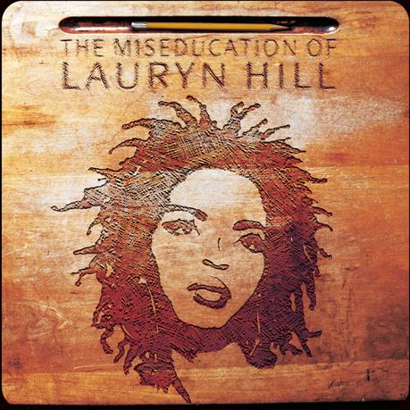

Vinyl 1
Price: R150,00
The Miseducation of Lauryn Hill is the only solo studio album by American singer-songwriter and rapper Lauryn Hill. It was released on August 25, 1998, by Ruffhouse Records and Columbia Records. The Miseducation of Lauryn Hill is a neo soul and R&B album with some songs based in hip hop soul and reggae